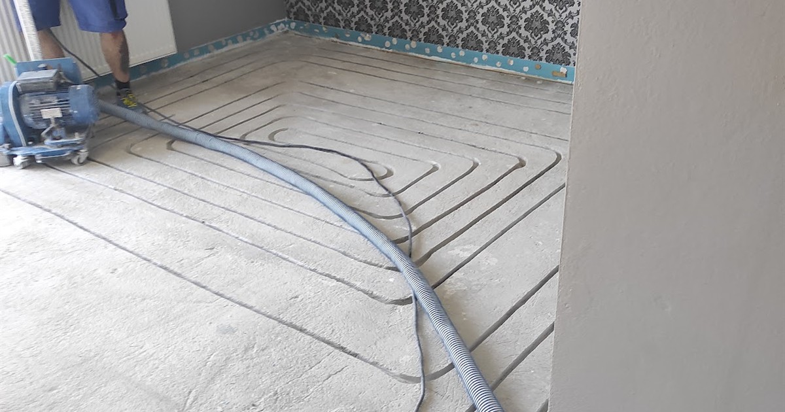

Ogrzewanie podłogowe od lat zyskuje na popularności, oferując komfort cieplny i estetykę wnętrza bez widocznych grzejników. Wśród metod jego instalacji coraz częściej pojawia się pytanie: czy frezowanie pod ogrzewanie podłogowe jest dobre? Wady i zalety tego rozwiązania są tematem wielu dyskusji — zarówno wśród inwestorów, jak i wykonawców. W tym artykule, opierając się na doświadczeniu branżowym, przeanalizujemy, dla kogo frezowanie jest idealną opcją, a kiedy lepiej wybrać tradycyjne rozwiązania.
Czym właściwie jest frezowanie pod ogrzewanie podłogowe?
Zacznijmy od wyjaśnienia podstaw. Frezowanie to technika polegająca na wycinaniu specjalnych rowków w istniejącej wylewce betonowej lub anhydrytowej, do których następnie wkładane są rurki instalacji grzewczej. Dzięki temu można zamontować ogrzewanie podłogowe bez potrzeby skuwania podłogi czy wylewania nowego jastrychu.
Krótka historia frezowania
Technologia frezowania zaczęła być wykorzystywana na szerszą skalę w Europie Zachodniej w latach 90. W Polsce zyskała popularność dopiero w ostatnich latach — wraz ze wzrostem remontów mieszkań z rynku wtórnego oraz coraz większym naciskiem na energooszczędność budynków.
Oferujemy profesjonalne frezowanie pod instalację ogrzewania podłogowego na terenie całej Polski! Dzięki naszej technologii prace przebiegają szybko, czysto i precyzyjnie. Skontaktuj się z nami telefonicznie lub mailowo i skorzystaj z naszej atrakcyjnej oferty!
Dlaczego warto rozważyć frezowanie? Zalety rozwiązania
Wybór frezowania może być strzałem w dziesiątkę — pod warunkiem, że odpowiada na konkretne potrzeby inwestora. Oto największe zalety frezowania pod ogrzewanie podłogowe:
1. Brak konieczności skuwania posadzki
To jedna z najważniejszych korzyści. Frezowanie pozwala zachować dotychczasową wylewkę, co znacząco skraca czas realizacji i obniża koszty.
2. Niższy koszt robocizny i materiałów
Nie trzeba wylewać nowej warstwy betonu, ani organizować kosztownego wywozu gruzu. To realne oszczędności – szczególnie przy większych powierzchniach.
3. Szybki montaż
Profesjonalna ekipa jest w stanie wykonać frezowanie i ułożyć rury nawet w jeden dzień (przy powierzchni do 100 m²).
4. Poziom podłogi bez zmian
W tradycyjnym systemie mokrym nowa wylewka podnosi poziom posadzki o kilkanaście centymetrów. Przy frezowaniu poziom podłogi zostaje bez zmian, bo rura wchodzi w rowek wycięty w istniejącej wylewce. Drzwi, progi i wysokość pomieszczeń zostają takie, jakie były.
5. Możliwość montażu w już zamieszkałych budynkach
Frezowanie jest szczególnie polecane podczas remontów mieszkań lub domów, gdzie nie chcemy prowadzić inwazyjnych prac budowlanych.
Czy frezowanie pod ogrzewanie podłogowe jest dobre zawsze? Wady rozwiązania
Choć frezowanie ma wiele zalet, nie jest rozwiązaniem idealnym w każdej sytuacji. Poniżej prezentujemy potencjalne wady frezowania pod ogrzewanie podłogowe:
1. Wymagana odpowiednia grubość i jakość wylewki
Jeśli posadzka jest zbyt cienka, krucha lub ma mikropęknięcia, frezowanie może ją dodatkowo osłabić. W skrajnych przypadkach konieczne będzie jej całkowite usunięcie.
2. Hałas
Proces frezowania, choć krótki, generuje spory hałas.
Dla kogo frezowanie pod ogrzewanie podłogowe będzie najlepszym wyborem?
Dla właścicieli mieszkań z rynku wtórnego
Szybki montaż, brak konieczności kucia i niższe koszty sprawiają, że frezowanie idealnie sprawdza się podczas remontów mieszkań.
Dla inwestorów, którym zależy na czasie
Jeśli liczy się szybkie zakończenie prac bez dużego bałaganu, ta metoda będzie optymalna.
Dla osób, które nie chcą podnosić poziomu podłogi
To świetna opcja przy renowacji starego domu lub mieszkania, gdzie nie ma miejsca na kolejne centymetry posadzki.
Podsumowanie: Czy frezowanie pod ogrzewanie podłogowe jest dobre? Wady i zalety — ostateczny werdykt
Frezowanie to doskonała metoda na modernizację instalacji grzewczej w mieszkaniach i domach już użytkowanych. Jego zalety — szybkość, mniejsza inwazyjność, oszczędność czasu i pieniędzy — przemawiają za jego wyborem w wielu przypadkach. Jednak jak każda technologia, nie jest uniwersalna. Kluczem do sukcesu jest ocena jakości wylewki, odpowiednie przygotowanie i zatrudnienie doświadczonych fachowców.
Frezowanie pod ogrzewanie podłogowe
Czy frezowanie pod ogrzewanie podłogowe jest dobre? Wady i zalety
Czy frezowanie można wykonać w wylewce?
Czy frezowane ogrzewanie podłogowe sprawdzi się w bloku?